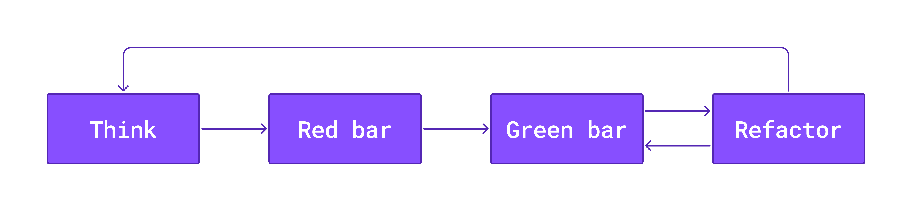

@joeposaurus@chaos.social
#AgileTD

def test_fizzbuzz_15():
assert fizzbuzz(15) == "1,2,Fizz,4,Buzz,Fizz,7,8,
Fizz,Buzz,11,Fizz,13,14,FizzBuzz"
def fizzbuzz(length):
return "1,2,Fizz,4,Buzz,Fizz,7,8,
Fizz,Buzz,11,Fizz,13,14,FizzBuzz"